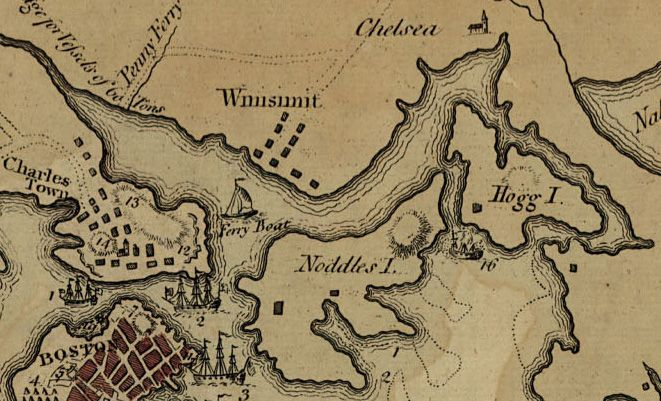

Biography
Moses Tufts, a schoolteacher, served as First Lieutenant in Capt. Isaac Hall’s company at Dorchester Heights and went north with the Canadian expedition of 1776.
Service Record
Town: Medford; Chelsea; Newcastle, Me. · Dates: 1744 – abt. 1805
Baptized 7 Oct. 1744 in Medford; died about 1805 at Newcastle, Me.; taught school in Medford and Chelsea. (Tufts Kinsmen, Vol. I, p. 158, family no. 40-6)
First Lieutenant in Isaac Hall’s company at Dorchester Heights, March 1776; Canadian expedition July 1776; at Ticonderoga. (Tufts Kinsmen, Vol. I, p. 158, family no. 40-6)
Family Connection
Family number 40-6 in Tufts Kinsmen, Vol. I. Parents are not named in the extract seen.
Relatives with profiles on this site: father Lieut. William Tufts (1713–1783); brother William Jr. (1736–1782; mother Catherine Wyman) ; brother George (1747–1796; mother Catherine Wyman); brother Grimes (1748–1808; mother Catherine Wyman); brother Samuel 2nd (1752–1815; mother Mary Francis); brother David (1763–1823; mother Mary Francis); half-sister Lucy Tufts Pritchard; half-brother Richard Tufts. Brothers are listed with their mothers as Brooks gives them (p. 550); sons of different mothers are half-brothers.
; brother George (1747–1796; mother Catherine Wyman); brother Grimes (1748–1808; mother Catherine Wyman); brother Samuel 2nd (1752–1815; mother Mary Francis); brother David (1763–1823; mother Mary Francis); half-sister Lucy Tufts Pritchard; half-brother Richard Tufts. Brothers are listed with their mothers as Brooks gives them (p. 550); sons of different mothers are half-brothers.
Spouse(s)
⚑ Unverified
Possible only: Brooks (p. 552) has “324 Moses Tufts m. Phebe Thompson , May 7, 1767”, but does not say which Moses. Not attached until confirmed.
Authoritative IDs / Index Numbers
| Source | ID / status |
|---|---|
| Perseus person index (auth=) | auth=tufts,moses. This is a name-level key shared by every Moses Tufts in Perseus, not a personal ID. Use it with the passages cited on this page. |
| Find a Grave memorial | Checked, not found |
| Brooks, History of Medford (1855) register no. | No. 266a (possible), p. 550 |
| Tufts Kinsmen, Vol. I family no. | 40-6 |
| Mass. Soldiers and Sailors | Not yet checked for this page |
| DAR ancestor no. | Note: Pending further work. |
| FamilySearch ID | Note: Pending further work. |
| Geni profile | Note: Pending further work. |
| WikiTree ID | Note: Pending further work. |
| Town / vital records | Brooks’s register (above) is drawn from Medford town and church records; printed VR volume and page not yet checked |
Only IDs confirmed against dates and family are given as matches. “Not yet checked” means the source has not been searched; “Checked, not found” means it was searched without a match.
⚑ Unverified
No other source on this site has yet been checked for this man.
Pictures




From Cutter’s Memoirs (1910)
Cutter lists a Moses among the children of William Tufts, placed with the children of his second wife, Mary Francis (vol. II, p. 1199). He gives no dates for him.
⚑ Unverified
Cutter’s placement under the second wife (married 1750) conflicts with a 1744 baptism. Whether Cutter’s Moses is this man is not settled.
Cutter’s Tufts sketch (vol. II, pp. 1198–1200) is a compiled family history of 1910, written for a descendant’s line. Quotes are from the Internet Archive’s scanned text, checked against the printed page numbers.
Source added: William Richard Cutter, ed., Genealogical and Personal Memoirs Relating to the Families of the State of Massachusetts (New York: Lewis Historical Publishing Co., 1910).
Links and Resources
Every source, record, map, survey, marker and artifact tied to this person, gathered in one place. Page numbers are given where a book is cited.
Maps, Surveys and Artifacts
- — Noddle’s Island and Chelsea Creek, 1775 map detail. Detail of J. De Costa’s map of Boston and the country around it, published 29 July 1775, showing Noddle’s Island and Chelsea Creek. Image: J. De Cos
- Source: Wikimedia Commons — Noddle’s Island and Chelsea Creek, 1775 map detail. Detail of J. De Costa’s map of Boston and the country around it, published 29 July 1775, showing Noddle’s Island and Chelsea Creek.Image: J. De Costa. Public domain.
- — …and Chelsea Creek, 1775 map detail. Detail of J. De Costa’s map of Boston and the country around it, published 29 July 1775, showing Noddle’s Island and Chelsea Creek.Image: J. De Costa. Public domain. Source: Wikimedia Commons
- Source: Wikimedia Commons — Fort Ticonderoga from Mount Defiance. Fort Ticonderoga, N.Y., seen from Mount Defiance (photographed 2009).Image: Mwanner. CC BY-SA 3.0.